|
The brain child of three of aviations true immortals, Donald Douglas, Sr., Ed Heinemann and Jack Northrop – 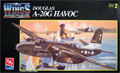
the A-20 arrived at a time of rapid growth and change in the late
1930’s as the world prepared for war. Here I look at the out of
production AMT 1/48 scale “G” model which was the final, heavily armed
version used extensively for ground attack. Here it is, the AMT A-20G "HAVOC"
12/29/03 Construction Completed 10/1/06
During the early years of the First World War the Germans held the advantage in the air with the infamous Fokker Scourge but in 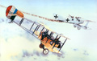
1916 the tables began to turn due to the introduction of the Airco
DH-2. The DH-2 was of a pusher design which allowed for the weapons to
be mounted in front without concern for a propeller. The aircraft was
very maneuverable and relatively easy to fly but technological advances
only gave it about 8 months on the front line before becoming obsolete.
Here is the Eduard 1/48 release of the Airco DH-2.
5/4/08
The Messerschmitt Bf-109 and the Heinkel He-111 both wreaked havoc over the cities of England during the 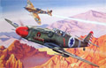
Second World War but ironically these two fabled Axis combatants would
join in the most unusual manner to help the newly established Israeli
nation survive its tumultuous birth. Manufactured by Avia in
Czechoslovakia and sold to Israeli agents this problematic aircraft was
immediately put into combat. Difficult to handle on the ground and not
much better in the air it nonetheless provided the weapon dearly needed
to stave off Egyptian attack until something better could be acquired.
From Hobby Craft, here is the 1/48 scale Avia S-199 “Mule”. 10/8/04 - Construction completed 11/21/04
Originally intended as a small passenger aircraft and mail transport this twin engined aircraft was quickly 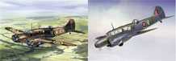
adapted for military service. Unfortunately the type was too slow and
too weakly armed to survive well in a combat environment. However this
did not hinder its ability to contribute to the war effort. Over 11,000
units were produced in Britain and Canada to perform as training
aircraft. Used to instruct navigators, bombers and gunnery crews she
continued in regular service until 1952. From Classic Airframes this is
the 1/48 Avro Anson Mk. 1 early version. 8/20/06
1978 was the year, disco and polyester leisure suits were the rage and in the model shops appeared a box that fired the 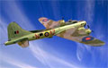 imagination of generations. Revell had released their 1/48 scale B-17F Memphis Belle
and the modeling world would never be the same. Often maligned for
raised panel lines and rivets it was and still is a sought after kit by
modelers around the world. For a preview of this classic kit, click
here…B-17F Preview
Lot's of B-17F models have been built, how about an "E" by Paragon?.... B-17E Conversion
Now let's put all this together with the B-17E Construction. Project completed on 12/24/03
It has been more than thirty years since two competing companies
released 1/48 scale models of the B-17 Flying Fortress. A lot has 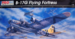
happened over that time, nations have gone to war, companies have risen
and fallen but the 1/48 scale B-17 has been there through it all. Some
changes were made and many accessories were turned out by aftermarket
suppliers and through it all the 1/48 B-17 had become an icon of a
modeling generation. Come with me on a journey through the History of the 1/48 B-17. 5/27/06 Updated 1/4/08
At first glance it looks like a B-17, just like all the rest flying over Europe in formation but as an enemy fighter 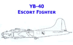
moves in for the kill it suddenly becomes clear that this is no normal
B-17, this is a meat grinder. In 1942 Boeing converted 20 B-17Fs into
long range escort fighters with bomb bays filled to capacity with
ammunition and extra armor plate on the fuselage. While a good idea on
paper this never moved past the service test phase however I feel
compelled to build a 1/48 Boeing YB-40 Escort Fighter. 03/24/09 Construction Complete 06/14/2010
I love building heavy bombers and jump at the chance to acquire any new kits or conversions when they become available. 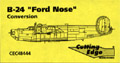
In the summer of 2003 Cutting Edge Modelworks released their resin
conversion set for the 1/48 scale Monogram B-24J. This conversion allows
the modeler to reproduce the distinctive “S” fairing on the nose and
accurately model alternative “J” aircraft along with the “H”, “L” and
“M” versions of the B-24. For a review of this conversion set, click
here…B-24 Ford Nose Conversion 10/5/03
Chosen by Jimmy Doolittle to take the fight directly to the Japanese and
used in every theater of combat. Initially proposed in 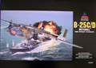
1939, first flown in 1940 and first blooded in 1942 over Japan. It was
used for ground support and attack, low level bombing and anti-shipping,
here is the 1/48 scale Accurate Miniature B-25C/D Mitchell medium bomber.
1/12/04
With a design that was perhaps one of the sleekest shapes of the Second World War, the Martin Marauder 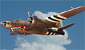
rode out a stormy passage at the beginning of its career. With the
short wingspan some pilots quipped that she had ‘no visible means of
support’ which ultimately resulted in the moniker ‘The Baltimore Whore’.
Many of you may not be aware of the fact that this aircraft was modeled
in 1/48 scale by two independent manufactures. It has been released
many times by Revell-Monogram but also by ESCI and here we will look at both kits. Here is a pair of B-26B Marauders 4/3/04
Late in 2002 I committed to build a B-29 for the 504/509 Bomb Group reunion in Annapolis for May 2003. Of course I  forgot all about this until April 2003 when they called me and asked
how that project was coming along. Of course I said “Just fine” and dug
into the kit with a passion that night. For gallery pictures and some
ramblings about the kit, click here…B-29 Dragon Lady
forgot all about this until April 2003 when they called me and asked
how that project was coming along. Of course I said “Just fine” and dug
into the kit with a passion that night. For gallery pictures and some
ramblings about the kit, click here…B-29 Dragon Lady
10/4/03
This little bi-fuel rocket fighter was designed in 1941 and once Stalin gave the project his approval it only took 35 days 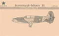
to produce the first prototype. Seven of these hot little numbers were
manufactured but the type never came into production. Flight tested
until 1945 it was destined to become nothing more than a footnote in
rocket history. Let’s take a look at the only 1/48 kit of this Russian
project plane, the Bereznyak-Ishaev B1 Rocket Interceptor from Sierra Scale. 12/10/05 Construction Completed 8/27/06
In 1936 the French Air Force went looking for a new fast bomber to update their inventory. Bloch Aircraft stepped 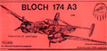
up to the plate with their three seat, twin engined Mb 174. Powered by
two Gnome-Rhone 14 cylinder radial engines and displaying exceptional
handling characteristics the aircraft was quite capable of taking care
of itself. Put into production just two years after the initial
prototype flew it was still in short supply by May of 1940 when the
German war machine rolled into France. This is the 1/48 scale resin kit
from Pend O’Rielle models of the Bloch Mb 174 A3 . 9/17/05
By the time the Blenheim Mk V entered service in mid 1942 it was hopelessly underpowered 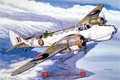
and outclassed compared to its adversaries in the Mediterranean and Far
East theatres. It was originally built in England in 1934 as one of the
first executive planes for the proprietor of the Daily Mail, Lord
Rothermere. At the time it was 30 mph faster than the RAF's new biplane
fighter, the Gloster Gauntlet. Bristol designed a military version of
their new aircraft, the Type 142M, which became the Blenheim Mk. 1. Here
we look at the end result of that line of aircraft, from Classic
Airframes, the 1/48 scale multi-media Bristol Blenheim Mk. V 12/24/04
The P-40 Warhawk/Tomahawk/Kittyhawk family of fighters evolved from the Curtiss P-36 Hawk 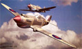
series with a better engine and all round better performance. The
export equivalent of the P-40B was the Tomahawk IIA. They differed from
the American version by having the wing guns replaced by four 0.303-inch
Brownings. The only American fighter aircraft built in larger numbers
than the P-40 were the P-47 Thunderbolt and P-51 Mustang. Let’s take a
look at the new 1/48 scale Trumpeter Curtiss P-40B “Warhawk” 11/19/04
America's foremost fighter in service when WWII began was the Curtiss-Wright P-40. As early reports of the war filtered back to 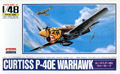
Curtiss they increased the armament package to six fifty-caliber guns
and added a slightly more powerful engine to become the E model. Though
often outclassed by its adversaries in speed, maneuverability and rate
of climb, the P-40 earned a reputation in battle for extreme ruggedness.
Warhawk was the name the USAAF adopted thus it is the official name of
the airplane series as a whole. For a low cost model of this historic
aircraft here is the Arii kit of the Curtiss P-40E Warhawk. 7/16/05 Construction completed 12/31/05
Approximately 1300 P-40K aircraft were manufactured at the Curtiss plant in Buffalo New York during the 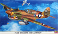
latter half of 1942. At the time it was thought these would be the last
P-40s made but delays in the P-60 program forced the continued
development of the type. Most of the K models went to China and India
but a few ended up in Africa and England to tangle with the
Messerschmitt Bf-109 while a few others went to Brazil and Russia. Let’s
check out the latest offering from Hasegawa of what looks to be a
series of P-40 models, the Curtiss P-40K. 4/4/06
The Curtiss P-40 Warhawk was obsolete on the day it was introduced, at least by European standards that is. 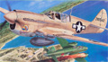
Even so the type was used as a stop-gap measure in all theaters but by
1943 the technological gap was widening. Curtiss made a valiant attempt
to fix the issues with the Warhawk putting it into a stringent weight
reduction program which resulted in the fastest version of the aircraft
yet. AMT/ERTL provided the modeling community with a fine example of
this variant several years ago and it is still readily available. Let’s
take a look at the final production version of the Warhawk, the Curtiss P-40N. 2/26/06 Second kit construction completed 12/30/06
It’s the last of the line, the final version destined to never see production of an aircraft that fired the 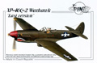
imagination of generations. The P-40 Warhawk, or better known as the
Flying Tiger, the type was not able to keep up with new designs being
produced during the war. Curtiss-Wright Corporation made one last effort
to upgrade the aircraft and keep it competitive but it just wasn’t
enough. This is the Planet Models 1/48 scale full resin version of that
last effort, the Curtiss XP-40Q-2. 2/19/06 Construction Completed 1/7/07
This is a difficult aircraft to categorize, is it civilian or military? Nearly half of all produced  went to military service for utility and Search and Rescue operations.
In service around the world since 1952 and still highly sought after
today due to it’s ruggedness and reliability. Originally designated the
‘King Beaver’, from Hobbycraft, this is the 1/48 scale De Havilland
Canada DHC-3 Otter
went to military service for utility and Search and Rescue operations.
In service around the world since 1952 and still highly sought after
today due to it’s ruggedness and reliability. Originally designated the
‘King Beaver’, from Hobbycraft, this is the 1/48 scale De Havilland
Canada DHC-3 Otter
3/24/04
The DC-3 set a new standard for air travel and made it possible for airlines to make a profit in 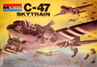 passenger service without government subsidies. Once the military got their hands on it, it became the C-47, which handled troops and equipment throughout the war. It continued in service right into the
21st century in both civilian and military arenas. For your consideration, this is the Monogram 1/48 scale Douglas C-47 Skytrain.
11/12/04 Construction update 5/13/2013
Cargo hauler, soldier, movie star, this aircraft has certainly played a lot of roles during its lifespan. Developed 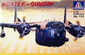 by Fairchild in 1947 to replace the aging C-82 Packet this new hauler was known as the Flying Boxcar in it’s civilian guise but was also known as “Spooky”, “Puff” or “Dragon Ship” while in military dress. Here we take a look at the Italeri boxing of this 1/72 scale aircraft, the Fairchild AC-119K “Stinger” gun ship. 11/13/05
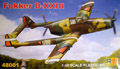 Built by Fokker this unusual push/pull configuration was an attempt to overcome the problems of asymmetric flight commonly found in twin engine aircraft. After eleven flights totaling about four hours of flight time the landing gear was damaged during a rough landing and the project was shelved. Here we have RS Models very first offering in 1/48 scale, the Fokker D-XXIII.
9/10/2014 Construction Complete 11/05/2014
The original design was a biplane but after several design modifications it ultimately became know as the F4F “Wildcat”. 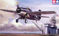 As World War 2 raged the Wildcat's reputation and utilization grew immensely. The aircraft was seeing active service with the U.S. Navy and the Marines in not only the Pacific Theater but in North Africa as well. Grumman's stubby, rugged fighter held the line against the Zeros in the early air battles of the war. Tamiya offers a great foundation kit in 1/48 plus there is aftermarket stuff galore. Here she is, the Tamiya Grumman F4F Wildcat. 4/24/05 Construction completed 9/22/05
Designed in 1936 and manufactured from 1937 until 1945 this amazing little amphibious seaplane acted as the primary  utility plane for the Navy and provided a rugged and dependable means
for many private airlines to service out-of-the-way areas around the
world. Still in service in the twenty-first century, here is the new
Czech Model 1/48 scale Grumman JRF Goose; 1/21/04
utility plane for the Navy and provided a rugged and dependable means
for many private airlines to service out-of-the-way areas around the
world. Still in service in the twenty-first century, here is the new
Czech Model 1/48 scale Grumman JRF Goose; 1/21/04
Construction completed 3/22/04
A contemporary of the famous Avro Lancaster bomber and the Short Stirling, the Handley Page Halifax was one of 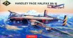 three primary front line heavy bombers used by the British during the Second World War. Initially used as a day bomber the Halifax was found to be vulnerable to Luftwaffe fighters and was then restricted to night operations. The first new four engine bomber kit that the 1/48 modeling community has seen in quite some years this is the Fonderie Miniatures Handley Page Halifax Mk. III. 2/4/06
Design work on the Hawker Sea Fury began during the Second World War and built upon proven design 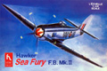 features found in the Typhoon and the Tempest. The Sea Fury did not fly until Feb. 21st, 1945 and production development would not allow the type to see action in the Second World War however it did see action during the Korean War. While not completely accurate Hobby Craft did manufacture a basic kit that could easily be built into a fine example of the Hawker Sea Fury F.B. Mk. II. 6/16/07
The Hawker Typhoon was simply put the most effective ground attack aircraft used by the Western Allies in WW2. 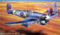
For the Allies “Typhoon” was synonymous with ground attack. Designed by
Hawker’s Sir Sidney Camm as a Hurricane/Spitfire replacement just
before WW2 the Typhoon was a large single seat fighter meant to be
faster and more heavily armed than anything that was in service with the
RAF or any competing power. The Typhoon was lacking at heights over
15,000 feet, where most combat was fought but below that level it could
soundly beat the FW 190. From Hasegawa here is the 1/48 scale Hawker Typhoon Mk. 1B.
2/3/05
She was a tank with wings. It was not uncommon to have reports of heavy rounds bouncing off the armored shell. She was an 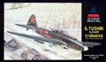
Ilyushin IL-2. Designed in 1938 by Sergey Ilyushin all this aircraft’s
vital components including pilot were contained in an armored shell that
comprised nearly 15% of the aircraft’s gross weight. She was slow but
she was tough, so tough that Germans on the ground called her “Flying
Concrete”. Let’s take a look at the Accurate Miniatures offering of the
1/48 Ilyushin IL-2M3 Flying Tank. 6/2/06
When the Russian Navy went looking to replace their outmoded recon
aircraft they went looking to T. M. Beriev and his design team. 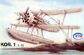
They produced a classically designed seaplane that featured dual
controls and folding wings for shipboard storage. Intended to be
launched by catapult from battle ships and cruisers by time the war
broke out they were recalled from the navy, refitted with wheels and
used as coastal spotters and light strike aircraft under the new
designation BE-2. Step into the world of esoteric aircraft and look at
the MPM vacuformed KOR.1 reconnaissance float plane. 10/29/05
The Lavochkin La-5F was a development of the earlier La-5 which was based on the Lagg-3. Improvements incorporated into 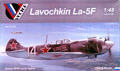
the F were better aerodynamic efficiency and improved flight controls.
The La-5F lost some of its punch in that one of the 20mm cannons was
dropped in a weight saving effort. Developmentally it was only an
interim aircraft but had a great effect in the air during the Great
Patriotic War. Vector, who is known for their excellent resin detail
sets, now offers this complete resin kit of the Lavochkin La-5F. 1/11/09 Construction Completed 5/09/09
The Lavochkin La-7 was considered one of the last "Grand Pianos" of combat aircraft, it was evolutionary 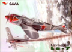
rather than revolutionary. The use of metals lightened the aircraft
considerably and combined with various other streamlining changes
resulted in an aircraft faster than the La-5 and more than a match for
the Luftwaffe’s Fw-190. The fifth offering from Gavia of the Czech
Republic, this is the 1/48 Lavochkin La-7.
2/25/05
Design work began in 1936 on this butt-ugly dive bomber. It was intended to be a single seat aircraft with semi-retractable 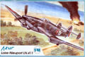
landing gear with the primary user being the French Navy and the French
Air Force. Once it took flight in 1938 it was found to be wanting in
several areas. With limited production and brief wartime service this is
the 1/48 limited run Loire-Nieuport LN.411 from Azur.
1/1/06
It seems slightly odd that we would have an American built reconnaissance bomber manufactured during the war years  that was not used by the United States Army Air Force but it’s true.
This is the Martin Maryland 167 that lost out in competition to the
Douglas A-20 Havoc but was picked up by the French and the British. Used
as a reconnaissance bomber and high altitude spy plane take a look at
the most recent release from Koster Aero Enterprises, the Martin Maryland 167. 1/29/06
that was not used by the United States Army Air Force but it’s true.
This is the Martin Maryland 167 that lost out in competition to the
Douglas A-20 Havoc but was picked up by the French and the British. Used
as a reconnaissance bomber and high altitude spy plane take a look at
the most recent release from Koster Aero Enterprises, the Martin Maryland 167. 1/29/06
When Luftwaffe pilots first sighted this sleek, high-speed aircraft in the skies over Russia they were not concerned. 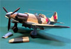
They thought that they were German aircraft While the truth of the
matter rapidly became apparent to the Luftwaffe pilots, the German High
Command refused to believe the initial reports coming from the Eastern
Front. Now the Luftwaffe would have to contend with the high-speed,
high-altitude MiG-3
11/24/03
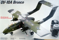 The original concept was for a small, lightweight craft that could loiter about an area for two or three hours, carry a medium amount of ordinance, operate from roads and clearings in a STOL capacity. The concept aircraft is the North American OV-10A Bronco and it performed with distinction as a replacement for the O-1 Bird Dog and O-2 Skymaster during the late '60s and '70s. Later the type performed well in civilian service. Here we can look at all the possibilities for the old Testors 1/48 North American OV-10A/D Bronco. 8/10/2012 Construction complete 8/19/2012
The Flying Wing has such an aeronautically clean design that it gives it a big advantage over conventional  aircraft designs. The N-1M “Jeep” was truly the first American flying
wing aircraft. From its inception, it was plagued by poor performance
because it was both overweight and chronically underpowered. Despite
these problems it was successful enough to serve as the forerunner of
more advanced concepts such as the XB-35, YB-49 and the B-2 Stealth
Bomber. From Sword this is the 1/48 multi-media Northrop N-1M “Jeep”. 9/17/04
aircraft designs. The N-1M “Jeep” was truly the first American flying
wing aircraft. From its inception, it was plagued by poor performance
because it was both overweight and chronically underpowered. Despite
these problems it was successful enough to serve as the forerunner of
more advanced concepts such as the XB-35, YB-49 and the B-2 Stealth
Bomber. From Sword this is the 1/48 multi-media Northrop N-1M “Jeep”. 9/17/04
The OS2U Kingfisher came about as a result of a 1937 US Navy specification for a new ‘Observer-Scout’ 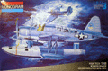
aircraft for use on battleships. Three companies offered up designs for
the specification. The Vought airframe was selected and began a long
service history in the position. Monogram kitted this kit back in 1967
and it is the only 1/48 Kingfisher kit available. Come with me and see
what can be done to bring this venerable old kit into the 21st Century,
here a facelift is given to the OS2U Kingfisher. 11/8/09 Construction completed 11/23/09
The P-39 Airacobra had an unusual configuration by installing the engine behind the pilot, as close as 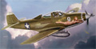
possible to the aircraft’s center of gravity. The Airacobra airframe
was streamlined and extremely aerodynamic but it did have a few
unpleasant flight characteristics. Hadley M. Dixon, WWII veteran and
P-39 pilot remembers thinking after he was introduced to the P-39: “Its gender was feminine. Something that pretty just had to be a she.” Let’s have a look at the Hasegawa rendering of the P-39D/P-400 Airacobra. 9/15/07
In the entire history of military aviation, there has never been an airplane that could match the P-47 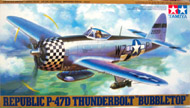
Thunderbolt for ruggedness and dependability. The pilots who flew it
into combat called it "The Unbreakable" and "The plane that can do
anything." The Thunderbolt was surprisingly agile at high altitude but
could also drop like a brick, which was an advantage in air battles.
Luftwaffe pilots would find out that trying to break off combat and dive
away was sheer suicide when fighting a “Jug”. Here is the Tamiya P-47D Bubble Top. 7/21/04
Scorching along at 467 mph at 32,000 ft., the P-47N could not be caught by any fighter in regular service 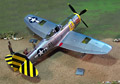
with any air force on earth with the single exception of its "M" model
sibling. The largest, heaviest and most powerful production version of
the Republic P-47, this birds innovative ‘wet wing’ gave it an
incredible 2,350 mile range and the ability to escort B-29 bombers all
the way to Japan on a daily basis. Here is the Academy P-47N clipped wing long range Thunderbolt.
8/21/04. Construction completed 10/5/04
The design was for a low drag airframe and laminar flow wings, which allowed for some truly staggering, 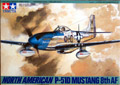
at the time, top end speeds. When involved in aerial combat a P-51 in
almost all circumstances had one option his enemy did not - he could
leave. Here we take a look at Tamiya’s North American P-51D Mustang dressed up for the 8th Air Force.
3/3/04
Construction completed 5/15/04
“The Yellow Jackets” flew P-51 Mustangs from bases in England, Belgium and France between 1943 and 1945 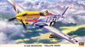
as part of the 8th Air Force. By Victory in Europe Day, the 361st
Fighter Group stood down having flown a total of 441 combat missions in
fifteen months of operations. Hasegawa has issued a 1/48 scale P-51D
Mustang devoted to the 361st FG and here we take a look at that fine
model kit and also make some comparisons with the Tamiya P-51 kit. Let’s
go now to the Hasegawa P-51D ‘Yellow Nose’ 1/14/07
Construction completed 1/14/07
America’s first jet fighter’s performance was not spectacular and it never got into combat but the P-59 provided 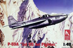
training for AAF personnel and invaluable data for subsequent
development of higher performance jet airplanes. The P-59A project was
conducted under the utmost secrecy, with Bell building the airplane and
General Electric the engine. In the end, only 66 Airacomets were
constructed. Let’s take a look at the Hobbycraft offering of the Bell P-59A Airacomet. 4/3/05
In response to basic requirements and specifications handed down by the Emmons Board, Northrop 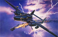
developed a large twin engine, twin boomed aircraft to house the
British developed Airborne Interception RADAR unit in the nose. This was
the birth of the ‘Black Widow’. The P-61 ‘Black Widow’ operated with
distinction in both the Pacific and the European theaters. Today there
are four surviving P-61s, none of which are in flyable condition. Here
we can take a look at the classic 1/48 Monogram P-61 ‘Black Widow’. 6/3/07
The PB2Y was the end result of a contract placed by the Navy in July of 1936 for a large four-engined maritime 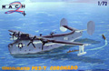
reconnaissance bomber flying boat. Named the Coronado the PB2Y-2
carried a crew of nine and had a defensive armament of six 50-caliber
machine guns. Several of the -3 models were converted to low-altitude
engines under the designation PB2Y-5. Join us in looking at this 1/72
scale Coronado from Mach-2, the PB2-Y Coronado. 1/7/07
This is a Monogram 1/48 scale B-24J that has been modified
with Bill Koster’s vacuform nose to represent a PB4Y-1 Navy
bomber. The decals are custom made  by Mike Grant Designs in Canada to represent the "Impatient Virgin". by Mike Grant Designs in Canada to represent the "Impatient Virgin".
For a complete construction review of the model click here...PB4Y-1 Impatient Virgin
And for those of you that just need to see that artwork up close....Impatient Virgin Close Up
1/8/03
Affectionately called ‘Dumbos’ the Catalina was developed as a result of a 1933 Naval Contract intended to 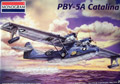
replace the Consolidated P2Y or Martin P3M that were in service at the
time. Originally seeing service in 1936, the PBY was used extensively
for aerial scouting, search and rescue as well as submarine interdiction
during the war. Here we take a look at Revell-Monograms large 1/48
scale PBY-5A Catalina.
4/16/05
The Russian heavy bomber program began life in 1934 as the ANT-42 and by December of 1936 a prototype was flying. 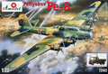
It was renamed the Pe-8 and was of equal performance and capacity to
the American B-17 bomber. It had an operational ceiling in excess of
30,000 feet, a maximum speed of about 276 mph and could carry 8,800
pound of bombs. Russian manufacture kits are growing in both quality and
popularity recently and this Amodel kit is a good example of what is
coming from the East. Let’s take a look at this 1/72 scale Petlyakov Pe-8.
10/7/07
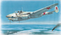 During the Great War the NKO issued an emergency requirement for a high speed night fighter to combat night bombers. The NKO basically selected the aircraft and issued for a crash development program on the Petlyakov PE-2 with only four days to meet the requirement. This became the Pe-3 and here we take a look at the 1/48 Special Hobby offering of the early Petyakov Pe-3 Radar Gneis 2.
7/11/2014 Construction Completed 8/24/2014
The concept of the I-16 began in the very early 1930s when Nikolai Nikolaevich Polikarpov was working on 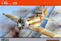
the I-15 Bi-plane. The Type 29 was the final incarnation of the
aircraft design with a Shvetsov M-63 engine and a single 12.7mm machine
gun. Eduard has been producing fine 1/48 scale kits of several of the
I-16 family and here we can see the final evolution of the type, the Polikarpov I-16 Type 29.
12/16/07
Here is Mirage's 1/48 scale PZL 37 Los' B. What a nightmare this kit turned out to be.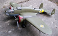
One of the first bombers used against the Germans you may enjoy a complete construction review here ...PZL 37 Los’ B
6/29/03
There is something about a Ryan ST and the military PT-20 that brings whistles and a Wow! from the 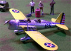
mouths of airplane lovers everywhere. This Ryan series of aircraft
began as a look that came out of the wondrously creative world of 1930’s
aviation design. For inexpensive modeling fun, from Testors, this is
the 1/48 scale Ryan PT-20/STM-S2
3/29/04
This kit is a slight diversion from what I normally work on as it is 1/72 scale. This is the Sword release of the 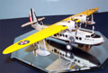
Sikorsky S-43 Flying Boat and this is definitely a kit worth looking
into. For a complete "in box" preview of this model click here...Sikorsky S-43 Preview
5/23/03
Construction completed 2/21/05
Designed to replace the SBD Dauntless this aircraft was manufactured by Curtiss with a rough start. First flown in 1940 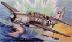
it did not actually enter into service until 1943 and was to be the
last naval dive bomber to see active service. Originally kitted by Pro
Modeler then leased to Hasegawa briefly it is now coming out under the
Accurate Miniatures logo. With new markings for NAS Atlantic City New
Jersey let’s take a look at the 2005 production of the SB2C-4 Helldiver. 12/18/05
One of the most widely recognizable aircraft from World War Two has got to be the Supermarine Spitfire. This aircraft 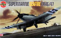
experienced a long evolution resulting in many refinements and
variations. Here I present to you an In-Box Preview of the 1996 release
by Airfix of the final evolution of this legendary steed. In 1/48 scale,
here is the navalised version of the Spitfire, the Supermarine Seafire FR.46/47
11/14/03
It’s the last of the line, the final development of a true thoroughbred. First conceived as a seaplane racer in 1931,
later adopted by the RAF as its front line defense fighter, developed
and modified over several years it was more than a legend, it was the
Spitfire. By the end of the war it was up to the Mk.16 but development
continued to the ultimate Mk.22/24 Spitfire before it was put out to
pasture by the introduction of the jet fighter. Originally kitted by
Airfix, now Eduard has taken this and upgraded it to a “full meal deal”
with resin and pe parts. Check out this exceptional boxing of the Spitfire Mk.22/24. 10/1/06
The Walrus was rather rectangular in outline and it was difficult to believe that it came from the
same stables as the elegant Spitfire. Initially ordered by the Royal
Australian Air Force in 1935 as the Seagull V it entered service with
Britain's Fleet Air Arm in 1936 as the Walrus. To its crews, however, it
was widely known as the Shagbat. Despite its appearance it established a
solid reputation for reliability and ability to withstand damage. From
Classic Airframes here is the multi-media 1/48 scale Supermarine Walrus 7/3/04
Chuff? Turkey? Pregnant Beast? Tarpon? Any of these names ring a bell? How about the biggest, heaviest single
engine aircraft to grace the decks of U.S. aircraft carriers during the
Second World War. That’s right, it’s the Grumman TBM/TBF Avenger! This
is the 1/48 scale offering that came from Accurate Miniatures just
before their demise in the late 1990’s. Reissued by the new Accurate Miniatures in it’s original low cost packaging, here for your review is the TBM-3D Radar Equipped #506 Avenger.
1/16/04
The Avenger was one of the most famous aircraft of WWII in Navy service and rapidly displaced the obsolete
Devastator aboard US carriers. Originally designed as a carrier-based
torpedo bomber by Grumman Aircraft, the Avenger found use as a
close-support bomber and patrol aircraft. Here we take a look at the
Hobby Boss version of this iconic kit and how it compares to the real
thing. Check out this 1/48 TBF-1C Avenger. 10/14/2010
Here is an aircraft that had the dubious reputation of being the aircraft that suffered the greatest losses of all
during the Great Patriotic War. Designed by A. A. Arkhangelski under
the direction of Andrei Nikolaevich Tupolev and first flown in 1933,
this is the 1/48 scale vacuform multi-media kit of the Tupolev SB-2M BIS “Little Katie”
11/28/03
Construction completed 8/2/04
Often referred to as England’s most important bomber the Vickers Wellington held the line for the first few years of the war.
Constructed using a geodetic design commonly found in lighter than air
ships assembly took an excessive amount of time but gave the aircraft
the ability to absorb huge amounts of battle damage. Obsolete by 1943
she continued as a coastal command aircraft and support type. From
Trumpeter models this is the 1/48 Vickers Wellington Mk. 1. 9/10/06
This last fixed wing aircraft to roll off the Westland assembly lines took nearly ten years
to develop yet only had an operational service life of five years. This
last propeller driven fighter aircraft hold a near cult status among
modelers. Today I look at the Trumpeter version which is the forth time
this aircraft has been modeled in 1/48 scale and may be the best
rendition to hit the model store shelves, without further ado here is
the Trumpeter Westland Wyvern S.4 multi role carrier based fighter/bomber. 10/29/06
One of the most unusual Army Air Forces research projects to be revealed to the public by the Air Technical
Service Command is the XP-55 Ascender, a tail-first, pusher fighter.
The performance of the XP-55 was not very impressive and was in fact
inferior to that of the more conventional fighters already in service.
Had the aircraft been fitted with the originally intended engine and had
fly-by-wire systems been available at the time, it most likely would
have been a successful design. Ultimately, it simply became another
aerial oddity. Here is the Curtiss XP-55 Ascender. 4/28/04
Definitely a futuristic looking aircraft, the Northrop XP-56 “black Bullet” was evolved as a response to
Circular Proposal R-40C. The XP-56 was the first USAAF fighter aircraft
to be built by Jack Northrop’s third attempt at an independent aircraft
company, Northrop Aircraft Inc. of Hawthorne, California, the
forerunner of today's Northrop Corporation. Ultimately it failed to
perform anywhere near the desired level but did provide data that
contributed to the B-2 bomber and the development of new construction
processes. Let’s take a look at Czech Model’s 1/48 multi-media Northrop XP-56 “Black Bullet”. 1/21/05
The first Yak aircraft saw initial development in 1939 as a two-seat, unarmed and underpowered trainer.
The designed showed good promise and was developed into the armed
advanced trainer version, Yak-7A. Improvements continued, leading to the
introduction of the "Yak-7B" in the spring of 1942 with improved
armament and engine. The Yak-7B was used with great effectiveness by
several accomplished Russian pilots both men and women. For your review
this is the ICM 1/48 scale Yak 7-B “Aces” series with ground crew.
10/15/04 ... Construction completed 10/18/04
Parasite aircraft is a concept that has intrigued most countries at least once in the past. Most forays into the application
of linking and unlinking aircraft in mid-air never leave the drawing
board. The most comprehensive of these projects happened in 1930's
Russia, under the direction of Vladimir Vakhmistrov designated 'Zveno'.
Mike Glinski is here to take us through the construction of this
esoteric subject using a combination of 1/72 ICM kits, the Zveno 7. 6/8/08 Construction Update 04/04/2010
|
|


{kind=link}